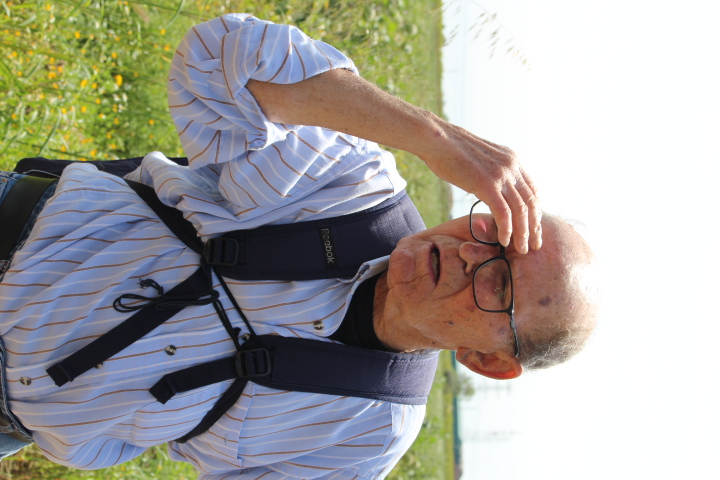

Week 4: 11/4/2022 - 18/4/2022¶
This week is Holy Week (Semana Santa) in the Catholic world. We’re not quite sure how it’s going to play in terms of more busy or less busy nevermind metro schedules. Iria thinks it might be quieter in most parts of the city as many people leave town to spend time with family elsewhere. We shall see….
11/4/2022 Monday¶
Today was mostly a recovery day from the Zaragoza trip and dealing with the consequences of Dawn’s phone being stolen. We think everything is under control but we’re watching carefully to make sure the accounts stay quiet.
(I am going to copy this section to my interests document as well) I got seriously sidetracked this morning with an effort to track down ways to access farms or farm experiences close to Barcelona. Somehow I tripped over this article about Parc Agrari which sounded exactly like what we are looking for. This project seems typical of a number of broad community focused social projects here in Barcelona. The formal name is Parc Agrari de Baix Llobregat (the Lower Llobregat Agricultural Park). As I tried to sort out how to access these spaces I was reading this pdf describing the project I was particularly drawn to the Parc Agrari trail (4) and the Llobregat Trail as well as the directions for getting to the Parc. Interestingly the whole thing raises all sorts of questions for me about how far my metro card will take me and whether I have to get separate tickets every time I step on the Renfre trains. I feel like we came into town on a Renfre train without problems on the day of the Tibidabo walk and we went through the turnstile for R5 to go to Manresa (Montserrat). Would the exit turnstile have complained when we tried to exit? To see the conclusion of this rabbit hole go to the Hikes page under Random Interests.
In the morning we did a little updating on this journal and Dawn got her iPad up and running. She found that her iPhone had synchronized with the cloud and so she hadn’t lost any of the images from the phone. Large relief. We did some laundry and made a big lunch before heading off to Spanish class. Took the Linea Morada since we usually walk from the school. New metro stop to figure out. It’s not quite as close as we could get if we changed lines at Sagrada Familia. The Linea Morada drops us right at Casa Batllo where C/ Aragó and Passieg de Gracia cross. Short walk up to La Pedrada and Expanish. Somehow I had missed the memo that Elena was going to be gone so we got a substitute (Maria) who had a slightly different style but also good. We reviewed and worked with Preterito Indefinido and Preterito Perfecto. Felt like I was the one way behind in class today. We all felt like our brains were struggling more than usual to sort things out.
After class I had a quick chat with Sandra and Maelynn about a housing question. Then we slowly headed out to walk to Kettlebell class for Dawn at 6:00. I had decided that it seemed a little warmed today so I hadn’t brought my sweater because I so often end up carrying it. Today in short sleeves and a bit of a wind I was on the edge of being cold outside for most of the day. Same contrast with locals who are bundled up in hat’s and down coats while I’m wandering around in shirt sleeves. Watched a little kid soccer, found a smaller notebook for Dawn to use at Spanish class, and got some bread for the next couple of days. When class was over we walked home by the usual route through Plaça de Glóries.
We talked a bit on the walk about the pace of Dawn’s Spanish class relative to the skill level of the students. It feels like they may be pushed faster than several of them can keep up with. We have similar but less severe experiences in the ‘advanced’ class.
Salad for dinner. Talked to Denali at home about how things are going. Can’t quite believe that we’re having yet another weird spring with huge temperature swings. Who knows if we’ll have fruit this summer or not.
12/4/2022 Tuesday¶
When we considered what to do with today Dawn suggested that we make it a catch up and recovery day. We’re both (along with others) feeling like we’re behind in Spanish and there are other tasks we feel like we need time to do. It’s a cool and slightly cloudy day so why not? We’re talking back and forth about items from our Spanish classes and I’m pounding away on my journal. All in all seems like good and comforting way to spend the day.
Around 2:00 we were feeling a bit hungry so Dawn asked if we could go try out the Lanto restaurant (Carrer de Valéncia 646 in el Clot) which I had been wanting to take her to for her birthday. We knew it would be a little more expensive than what we had been doing but the reviews made it seem like it might well be worth it. According to google maps they were open so over we went. What a lovely experience! Yeah, its not a place to eat if you want to go home full. It is a food experience with people who love what they do and are gracious and friendly. If you sit in the front room (pictured below from the designers website) you also have the pleasure of watching each dish be prepared.
Lanto (front area)
Because we didn’t have reservations (+34 658 94 11 31) we were offered a table in the front room which turned out to be extra fun because the opportunity to watch the food being prepared. The menú de día (16.5€) is 3 plates plus dessert (postre)and drink (bebida). Your only choice is the main course (the 3rd plate). Pretty clear that Dawn probably wouldn’t have picked the sardine appetizer if we were eating a la carte but it was delicious and not a bit fishy. The roasted veggies were also lovely. I don’t know if we got two different 1st plates because that was an option or because they kindly set up two different servings for us to try. 2nd plate was a small serving of lovely pasta. The main plate Dawn had cod over spinach with dill and I had pork belly with mushrooms over mashed potatoes. All of it was absolutely marvelous. They do all this work including baking their own bread in a tiny space that you see to the left of the image. Really remarkable. Dessert was more goodness as apple (poached maybe?) over a carmel cream with some crispy ‘cracker’ over the top. Coffee to finish and we felt like we will have to come back once a week just for the taste experience.
Ricardo, Arica, and Simone (from the reviews) are all lovely and may be co-owners. Not sure what the arrangement is. If I have assigned the names in mind correctly Arica and Simone are married. Ricardo is from Perugia Italy not far from Orvieto where we visited Civita de Banoregio with Anita years ago. That would make his native language Italian while he works in a restaurant in Catalonia where he needs Spanish and Catalan and he was happy to try English with us. Crikey. Simone (the wife?) is working on both her Spanish and her English. Perhaps her native tongue is Chinese. A wonderful friendly polyglot crew. What a great way to celebrate a delayed birthday for Dawn!
We will finish the day studying more Spanish and hope to pass our tests tomorrow with more comfort than last week.
13/4/2022¶
Neither of us slept well last night so we took a late start to the morning. Dawn cancelled her 9:30 kettlebell class. After a little studying for Spanish class we went to do some shopping anticipating fewer hours where the shops are open for Semana Santa. After shopping we had a solid lunch and then decided that we would walk across town to the Expanish building. Took about 45 min and we walked more of the length of A/ Diagonal than we had before. Spanish classes went well enough though I’m still struggling to find the words I want never mind the proper tenses. We played a vocabulary game in our class where each person in turn has to submit a word which begins with the last letter of the previous word. It makes you very aware that there are a log of words that end in r, a, o, and s. Very few words that end in different consonants. Interesting. Amusing also to get 90% of my homework wrong even after fixing some slightly obvious errors this morning. The difference between learning a language by examining it’s rules as opposed to what you remember hearing is fascinating. I guess the idea is learn to say it correctly and you’ll be more likely to notice and understand what you hear.
Stopped for a coffee and snack before gently walking down to Raval to Casa Pierra (the art store) to get a few things for Dawn. After that we stopped into The Perfumery to talk to Thomas again and confirm Dawn’s experience with two of the perfumes she had tried before. We had another lovely 30 min conversation with him and Dawn is bringing home two additional samples to try tomorrow or Friday. Thomas accidentally sent the pdf of the book for the Perfume class we’re taking from him in May so we have lots we can read if we want. Dropped Dawn off at figure drawing and came home to do a little work and then I’ll go back and get her. Yet another drippy day to make the locals crazy. Weather looks better for the weekend into next week.
A thought I had while coming home is that maybe I should take just one sentence and pose the thought or question in as many different tenses as I can sort out. Both in Spanish and in English. Some of these tenses I have no actual idea what they connect to in English and I think that’s contributing to the brain seizures. Perhaps somebody severed my corpus collosum in the night which would also explain a few things but probably not.
I spent a little more time this morning trying to get a better sense of the edge of Zone 1 for public transportation. We may need to ride the trams out to their ends as well as the Rodalies lines (Rx) to the edge of Zone 1. Then perhaps we will get some Zone 6 T-casual tickets and go out to the end of the Rodalies lines. Apparently Rodalies are the suburbs – Google translate agrees though rodalies is Catalan and cercanias is the Spanish term.
14/4/2022 Thursday (B’s Birthday:)¶
The primary goal for today was to get away from people as much as possible and at some small level escape the city. I had been looking for urban agriculture projects in Barcelona wondering about community gardens (there are some), vertical green spaces (maybe), or other forms of feeding yourself when in a city. In the process I came across Parç Agrari which is similar to our Ag Experiment Stations in the US. This is an effort to provide support for small to medium farms in the Baix Llobregat (lower Llobregat river basin). Supporting these farms also provides a safer use for these flood plains near the delta of the Rio Llobregat. In their literature there are a number of indicators of trails or paths through the surrounding farms that might allow one to get a sense of the region.
To get there we took the L5 Azul to the end of it’s run at Cornellá Centre. This is just within the Zone 1 that our passes work for. From there you walk through town down towards the river (map is on the Hiking page). It’s a relatively straight shot down past Club Delfos where the path heads over a long bridge to cross both the interstat and the Llobregat river. As we walked down on a bright spring morning it was lovely to feel the sound of the cars and people fade into the background. In the wetlands next to the river the local cane grows tall and probably invasively but it also provides trellis material for the farmers. Nearly every farm we passed later had several stacks of cut cane for use around the farm. As we walked over the river in the cool morning air we could see turtles sunning themselves on the rocks. The image is blurry because they were 20 m below the bridge and I didn’t want to drop my phone. Sorry.
Tortugas cerca al Rio Llobregat
The footbridge delivers you to the top of the dike that seeks to manage the river (I assume since it looks just like similar earthworks next to the Mississippi). A short km down river brought us to the headquarters of the ‘park’.
Side Note: In the course of trying to sort out where the trails were for the park I found that there are also a host of connections to longer trails that are part of Spanish or European long distance trails. I found it hard to track down specific information about some trails but there is apparently a long trail that follows the entire course of the Llobregat deep into the mountains near the Pyrenees. Other sources suggest that you can start from where we were and walk along or near the river all the way to Montserrat. In some places the trails move through cities and towns much like the Camino de Santiago but they are supposedly linked and marked. Parts of the trails we were exploring connect to a loop trail being developed to circumnavigate the Mediterranean. From this location you can also walk downstream to the delta of the Llobregat which wraps around El Prat Airport. Perhaps sometime we’ll try that on a cool day.
The ‘headquarters’ seems rather quiet so we wandered over to the arboretum where they had a large collection of typical (and perhaps atypical) varieties of fig, apple, peach, olives, plums, pears, and grapes. Along some of the aisles in the arboretum, which has a definite farm feel, there were varities of rosemary, sage and lavender. The fruit trees in general have been pruned to have a very wide form that is open in the middle. Usually 4-5 leaders extending outwards from only 30 cm above the ground. It will let a lot of light into the fruit but for us woudl make mowing and maintenance very difficult. I also feel like our spring snowstorms would break this pruning style. It does have the lovely feature that almost all of the fruit is reachable from the ground. Interestingly they did not prune their apples to this form generally.
Grapes: It was nice to be able to get a close look at the grape pruning. Their spacing is only a little wider than ours though the bottom wire that the main stems are trained to is quite low – maybe 50-60 cm – with a second wire 30 cm above. The secondary stems are cut back so that there is a ‘sprouting point’ about every 15 cm along the main leader. No first year growth is apparent from the year before. This is very like Dawn’s ‘slaughtering technique’ from a couple of years ago. We’ll have to try this next year. Should have taken a picture. This image is very much what we saw.
Pruning example for grapes

Watering: The watering system was interesting. They hung standard drip irrigation feeder line about 30-40 cm above the ground along every row. Standard drip heads (couldn’t tell what feed rate) were attached every 1.5 m along the length of the feeder line. This roughly led to two drippers for each tree or grape, one on either side. If they needed to reposition the location of the dripper they didn’t move the dripper they attached a small line to the dripper and twist tied it to the feeder line to where it was needed. This was used commonly with younger trees whose root zone wasn’t as wide. As I think about this I’m not entirely sure the spacing wasn’t greater than 1.5 m since for a typical mature tree two drippers landed a reasonable distance from the trunk on either side. That would suggest a spacing more like 2-2.5 m. Again, having the irrigation above ground was effective from a commercial ag perspective but would make mowing and maintentance much more challenging in our situation. Since the commercial farmers are keeping the growth between the rows to a minimum (letting them grasses die between the rows) that makes a lot of sense. Nevertheless it was still interesting to see the layout. Overall the arboretum was definitely NOT a park – overgrown grass everywhere it didn’t actually interfere with the trees.
We also wandered around some of the small test vegetable gardens. Couldn’t quite sort out what the different projects were. Some looked abandoned and others seemed to be in progress. Lots of mature lettuce and peas. Another legume that we didn’t recognize was also prominent along with artichoke (carxofe). Again there was a general sense that there was an effort to minimize actual hand labor if the product would survive. Most plots were very overgrown.
As we continued to wander around we eventually found an entrance and chatted with the guy in the office. He offered an English guide to the area and we talked a little about where the trails led. Very friendly. In the end he helped us understand that their interest is entirely to support small commercial farmers in the area. They have created a digital badge to indicate that particular produce was grown at farms involved in the project. He was vaguely aware of urban gardening projects but no specifics. He did help calarify where we should go to walk the Cami de Ribera (just a set of linked farm roads) through the farms in the local area.
On the way to the Cami de Ribera we passed this lovely bench. Up to this point all the benches had been enormous square prisms (square cross section, long on third axis) arranged in v’s on the ground. This one had welded wire cages (smaller gaps than our hog panels) that were filled with cutoffs from granite counter work. This made for a truely massive and stable object to which the bench could be attached via 10 cm angle iron welded to the cage and screwed to the bottom of the bench. Sort of like our rock cribs at home but much more tidy looking. I wonder where the countertop cutoffs go in Bend?
Cutoffs from granite counters.

We found the C/ de Ribera and started walking through the fields. This is when it became clear that every artichoke plant produces a large number of ‘fruits’. A various points it felt like it was artichokes as far as the eye could see.
Artichokes (carxofes) as far as the eye can see….

Along the edge of the road there were concrete irrigation ditches with places to block the flow and flood irrigate the crops. Flood irrigation is clearly the plan here. Perhaps using water from the Llobregat. At one point we found this amazing tree (poplar/cottonwood) that had clearly been at this intersection of the ditch for hundreds of years. Dawn grabbed a picture.
The artist at work capturing a tree that has been on that corner for hundreds of years.

All along the walk were these old farmhouses. Each had a little plaque out front and had a name like Can Comas, Can Ferrer, or Cal Misses. The Can and Cal must mean something but I can’t sort it out from google translate or the web. Have to ask in class on Wednesday. As we walked along these narrow roads we would peer through the fences and gates to get a sense of these houses. Nearly all had ancient trees in their courtyards and seemed lived in and maintained. Part way through the walk just after Dawn noticed that the adjacent field of artichokes was past ripe and flowering and older gentleman and woman were chatting and her farm dog came to the gate to check Dawn out. As Dawn made gestures of friendship to the dog the two said goodby and the gentleman joined us on the road.
Our companion for the second half of the walk….
Thus began a long conversation about agricultural, his life (he didn’t like school when he was a kid and skipped out after recess all the time), and his knowledge of local agriculture. He wished my a happy birthday but noted that he was 79 and still doing well. He eventually went to Madrid when he gave up on school in the 60’s and served in North Africa in the military service. He still had a very handsome photo of himself in his wallet and a picture of the Virgin Mary from Semana Santa in 1967 in Madrid. Crazy.
in discussion
I attempted to ask him questions about why the artichokes were overripe and he was clearly disgusted that the owners had abondoned their crops and harvested nothing. There was a definite sense that many of the owners did not work at their land hard enough to warrant his respect. We walked by a well maintained market garden at one point and he noted that this was a plot that the original owner didn’t care for so the new owner made an offer and bought the property. Got some respect that did.
portrait 
He had walked down from San Boi center which was 2 km or so away (maybe more since we don’t know exactly where he started) to visit his friend and was on his way home with his trusty cane walking stick. A couple of times he pointed out homes of people who were married to the folks who passed us on tractors. He also noted that he had two kids and they were still living at home. I wonder if they are grandkids given that he is 79 and they are in their 20’s living with him with their girlfriends. Anyway, we had a great chat and when we almost took a turn down a deadend road he got us on the right track. We bumped elbows a la COVID and exchanged great smiles as we each went on about our lives.
explaining to the idiot American
What a lovely experience. We got back to the river and walked downstream along the dike until we got back to the bridge. No turtles visible as we walked back across the bridge to civilization. Carnellá Centre seems to be newer and more open than Barcelona downtown which makes perfect sense since it was probably built late in the 20th century. We rode the tram above ground over towards the Zona Universitat just to be able to see this part of the city. We were up high on the shoulder of Tibidabo much like we were for the Tibidabo day hike and welcome barbeque. We picked up L3 (green) at one of the stops and went home via Plaça Catalunya to rest. Long day but lovely.
Dawn made dinner and we watched a little TV and went to bed.
15/4/2022 Friday¶
After being delayed at the Denver Airport Brian Nelsen is supposed to arrive later today. We’ll hope that he makes it without issues.
For us we took a slowish start to the day and were considering various options for today. Since it was already a little late we decided to get tickets for Parc Guell for Monday (when it’s supposed to be cooler) and just spend today su reconoitering the area. Information of the web suggested that large parts of the park were open to the public always. The monumental part of the parc is where access is managed. After having been there I would say something like 70% of the parc is managed admission.
We took the metro (L1 Roja to Catalunya and L3 Verde to Lesseps) and then walked to the entrance. As advertised it is not a long walk (maybe .5 km) but there is some serious up to get up the hill to the entrance. Signage is not too bad at the begining but less obvious as you go along. We just followed the steady stream of folks who seemed to be headed in the same direction and that worked as well. One can get off at Vallcarca as well and the route is perhaps more direct but you arrive higher on the hill than absolutely needed. As we passed that access path the outdoor escalators that are installed did not appear to be working so it was a long set of steps. Once we found the standard entrance we began walking around the western side of the park looking for an access point that wasn’t gated. Eventually the sidewalk trickled out into a wide path with a few people running or walking dogs. This got us into the trees and steady climbed up the back side of Parc Guell and eventually arrived at a viewpoint.
Parç Guell Trails…

It was a magnificent view of the city which we enjoyed before sitting down and having a good snack/light lunch. There are some way to get to this view point without having walked as far as we did but still it was surprising how many folks were there by 12:00. Just before we left a traveling Good Friday procession came up one side, sang a bunch of songs with some guitarists, and then proceeded down the road on the other side. From the view point there was a less maintained trail up to the very top of the parc which I decided to skill due to challenges I have when my feet slip and my knees don’t recover well.
Parç Guell Viewpoint

Coming down the eastern side of the park we quickly arrived at the saddle between Parc Guell and the Turó de la Rovira (colloquially known as the Bunkers). This former defensive position from the Spanish Civil war is a great place to look out in all directions across Barcelona. Again, we just followed the general flow of people and found our way to the top. What is surprisingly different from all the images I see on the web is the graffiti that covers every available surface. Gives the whole place a bit more of a trashed feeling that the images suggest. But the view is great! We spent some time on top looking at all the parts of Barcelona we hadn’t even been aware of and then found a different way down. At a guess I suspect that if you head toward the Rovira from any direction you will find a path that leads you up to the top. On the south side there appears to the the hole left behind from a large quarry which is quite impressive. It was also nice to have the wind blowing at the top to cool us off.
When we arrived back at the saddle between the hills we headed down along the southern side of the park taking each opportunity to bear west as we did so. This led us down some small streets and down long sets of stairs. At each entrance to the back were large signs noting that admission was sold out for the day. Sort of glad to have tickets for early Monday. On one of the paths we randomly walked down we crossed a Gaudi quote cut out of steel or bronze and laid into the sidewalk. The first one we noticed was in Hebrew of all things and we couldnt’ quite decipher it (see image) but as we continued we realized that the same quote was translated into 10 or so languages and placed into the walkway at regular intervals. I didn’t take a picture of the English version which says “Everything comes from the great book of Nature”. Nice.
Parç Guell Gaudi Quote

We returned slowly to metro station and rode inwards a couple of stops to Diagonal to see if we could locate the Origa bakery that Iria had mentioned (we’re out of bread). As it turns out Origa is pretty close to our Expanish classes but was closed early today because of Good Friday - dang! We did get it located – uphill on C/ de Girona which changes to Mila i Frances? as it gets smaller a block or so above Diagonal. Origa is a small shop and we’ll look forward to coming back over the weekend.
We decided that we would walk towards home as we watched for a place to get bread. We quickly realized that there wasn’t much still available in the stores that were open and many of the panaderia were closed. Happened upon one store that stil had some loaves that looked good. Bought a couple and then noticed the flower market across the way. This market was on the end section of a market we had noticed along C/ de Arago a couple of weeks ago. Lots of live plants and lovely displays. We wandered and enjoyed for a few minutes before drifiting down to Arago and deciding to finish by walking home.
A lot of walking today and my knees know it. Comparable to yesterday’s long walk at Parc Agrari. Got home and sort of made it up the stairs to our apartment. I don’t know how Dawn had the energy to make a lovely main meal for lunch but she did. I took a small siesta before starting to update this journal. Dawn looked through some of her images. Since Dawn missed a drawing class last Sunday she wants to go to Friday class this week. We’re leaving in a few minutes to head over to life drawing. A bit of a late night for us and we’ll have to remember to get up so Dawn can try walking to Kettlebell unassisted.
16/4/2022 Saturday¶
Today started with letting Dawn see if she could find her own way to Kettlebell. She did great! I did walk along side but she did all the work. While she had her workout I went to the Marina metro stop to get my T-usual pass replaced. Nobody was at the booth so I bailed and walked down to the Barceloneta. Took about 15 min. Wasn’t very crowded but there were plenty of people playing 2 person volleyball with just football (soccer) tools. I was very impressed at the level of skill and athleticism. Walked out the end of the pier. Water seemed very clear which is good for future reference. Walked back up through another rambla with some sculptures to get to Marina from a different direction. This time there was someone in the booth. They were totally chill about the whole thing as soon as I showed the passport that matched the number on the metro pass. He used his magic card to get the vending machine to give me a new card that is good for 3 more days (seems crazy) and I was on my way in 10 min.
Picked up Dawn and she led us home – Yay! After a bit of rest (my knees are still remembering yesterday’s walk) we went shopping. Dawn made a lovely omelette for lunch with some of the baguette for bread. After that we chatted about our original plan to go to the Laberint de Horta but it just seemed so dang hot that we decided to just go over to the Origo Bakery and get some nice bread for the weekend and call it a day.
In the meantime Dawn had asked me to look for the Flamenco event that she noticed Friday night at the Palau de la Musica and it turned out to only be that night. As I was looking at the schedule I realized that an interesting guitar trio was playing tonight (and coming back every couple of weeks). After listening to the trailer and discussing we decided to get tickets for tonight when it’s a little cooler and see if my knees can handle the small seats again. Tickets are a bit spendy at 40€ but what the heck, we’re hear to soak up different experiences and if we like these folks we can go hear them again.
Then we went and got bread at Origo. Lovely looking bread that tasted as good as it looks. All of it is sourdough in one form or another. We are looking forward to eating it. Seems like a lot to go through to just get bread but I feel like when someone (Iria in this case) says this is a place they go out of their way to visit I’d like to know what that experience is. The bread is 3x as expensive as the standard baguette but I suspect we’ll appreciate it.
As we got home I peeled off to make reservations for lunch on Tuesday with Emma and Brian at Lanto. Had an enjoyable chat with them and got us booked for another taste experience.
When I got home I spent some time pursuing the Museo de Ter in Manlleu (15 min from Vic) and how to get there. Dawn agrees that this seems like a fascinating industrial museum to visit. Details are on the Bruce Interests page. Hopefully I can figure this out for next weekend.
Tegan called and we chatted for a while and checked in on Izzy. Things seem good in Oregon though its amazing how much snow is coming down this spring.
Off the the concert which I will report on tomorrow after we return.